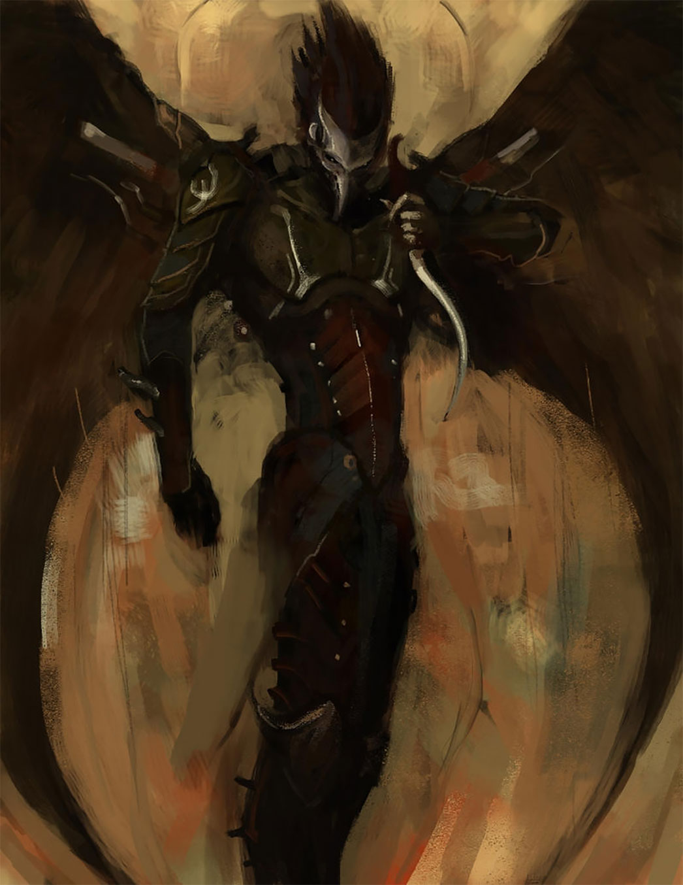
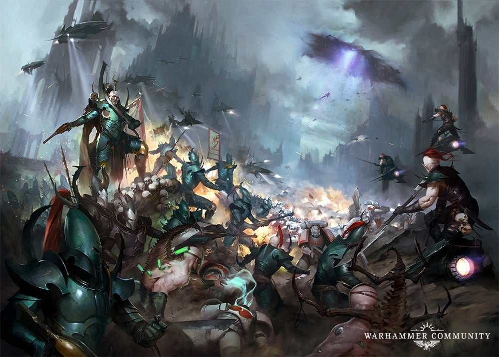
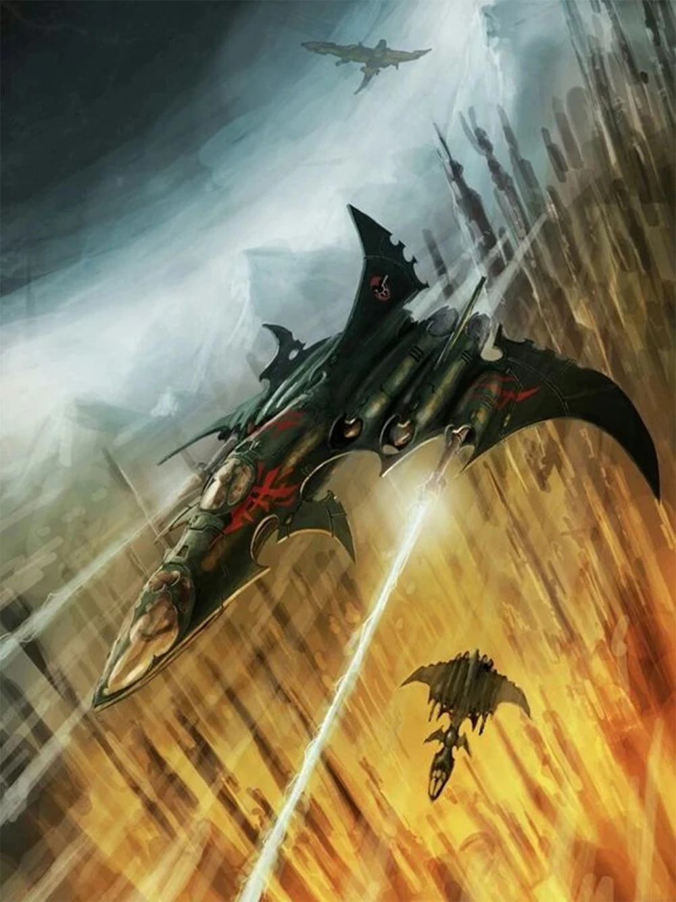

Who are the Kabal of the Darklight Kites?

Kabal Sigil
A Brief History of the Kabal
The Kabal's history begins like all great Kabals in Commoragh, with an ambitious Drukhari and a mountain of corpses. Archon Celeanos was a lowly half-born Drukhari whose origins were that of a slave. During a major Dsyjunction, Archon Celeanos broke free of his chains and led an uprising against his Kabalite overlords. After the dust settled in Commorragh, Celeanos found himself the Archon the new Kabal of the Darklight Kites. His first act as Archon, was using his newly found wealth to transform himself and his closest followers into dreaded Scourge, a mix between Drukhari and Avians. Over the next thousand years, Archon Celeanos schemed, backstabbed, and built the Kabal to what it is today.
A Drukhari Scourge
Realspace Raids
A realspace raid begins with extensive planning and scouting of a prime world. The Kabal will recruit large amounts of hired muscle from the nearby gangs, cults, and covens in order to bolster their ranks. When the Kabal is ready, the Drukahri will depart aboard the flagship "ShadowStrike" and traverse the webway until reaching a suitable portal to enter realspace. It is prefered to enter realspace directly above their prime target, using the voidships heavy weapons to rain down death on any defenses. After suitable bombardment, the Voidship releases it's deadly cargo into the city beginning with Razorwing Jetfighters and Voidraven Bombers. Following closly behind, the Scourges decend on black and violet wings carrying heavy weapons. The Hellion and Reaver gangs are next, riding eye watering skyboards and jetbikes to run down any forms of resistance. Finally, Raiders and Venoms transport all manner of Drukahri to the planet to sweep up survivors and reinforce any parts of the battlefield. The result is a series of lightning strikes against a suprised defender, wave after wave of devestation renering any meanigful resistance moot. If executed perfectly, the Kabal is free to plunder wealth and slaves from the world as they wish before departing just as swiftly as they arrived.
Realspace Raid in Progress
